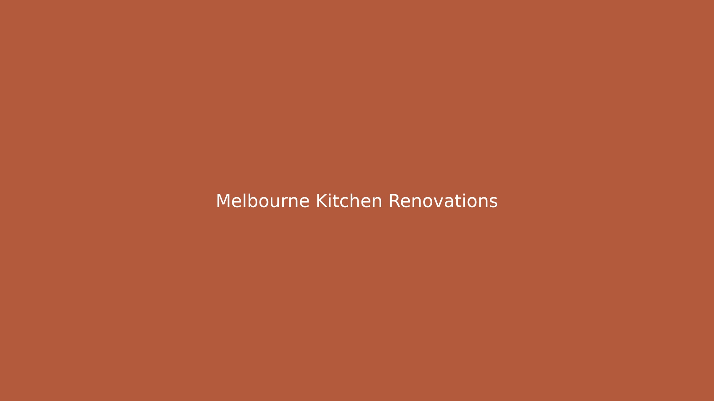

Kitchen renovations in Melbourne typically involve engaging a Victorian Building Authority registered renovator who handles design, demolition, cabinetry, plumbing, electrical and installation under a fixed-price written contract. Period homes, post-war brick veneers and apartments each call for different approaches, from made-to-measure joinery to compact layouts with acoustic underlay. A free in-home design consultation lets you scope the project, agree a written quote and confirm timelines before any work begins.
For local buyers, kitchen renovations melbourne across Melbourne's period terraces, post-war brick homes and apartments, each project demands a renovator matched to the home's age, layout and your budget.
Kitchen Renovations Melbourne Explained
Before contacting a renovator, clarify what you want to achieve and how much you can comfortably spend. A full kitchen renovation covers new cabinetry, benchtops, plumbing and electrical updates, a splashback and soft-close hardware, all managed end to end on a fixed-price written contract. Smaller refreshes, such as replacing cabinet doors or installing a new benchtop, cost considerably less and can often be done without a full strip-out.
Request a free in-home design consultation so the renovator can measure the space, discuss your style preferences and provide a written quote. A same-day reply is possible in many cases. This is also your chance to flag any structural changes, such as removing a wall between the kitchen and living area, which may require a building permit and engineering certification.
Prioritise your spending on elements that are difficult or costly to change later. Plumbing and electrical rough-in, solid cabinetry carcasses and durable benchtop materials are worth investing in from the start. Cosmetic touches such as door handles, paint colours and pendant lighting can be refreshed later as trends or your budget shifts.
- Full renovation: new cabinetry, benchtops, splashback, plumbing, electrical and installation
- Cabinetry refresh: replacement doors, new benchtop or updated hardware only
- Apartment kitchen: compact layouts, owners corporation approval and acoustic underlay
Custom Cabinetry Versus Flat-Pack Joinery
Melbourne's period terraces, Edwardians and Californian bungalows suit made-to-measure joinery rather than a standard flat-pack run. A cabinetmaker whose finish style fits your home can match existing skirtings, architraves and period detailing that off-the-shelf units cannot replicate. Custom cabinetry also allows you to work around uneven walls, original cornices and non-standard ceiling heights common in older Melbourne housing stock.
For newer homes and apartments, semi-custom or flat-pack options can deliver a clean modern look at a lower cost. The trade-off is flexibility: standard unit sizes may not maximise every centimetre of an unusual floor plan. Weigh durability, finish quality and warranty terms when comparing quotes, and ask whether the cabinetry is manufactured locally or imported. For a broader overview of Kitchen Renovations services and matching to the right renovator, the parent guide walks through the full process.
Period Homes, Post-War Brick and Apartment Kitchens
Different Melbourne housing types call for different renovation strategies. Period homes, including Victorian terraces and Edwardian villas, often need demolition of outdated fit-outs, structural repairs to bearers and joists, and careful integration of modern appliances behind heritage-style facades. Post-war brick veneer homes generally have straightforward rectangular kitchens that accommodate standard cabinetry runs but may need updated electrical and plumbing to meet current standards.
Apartment kitchens add another layer of complexity. Owners corporation documentation and approval are typically required before construction begins, and compact layouts demand space-efficient solutions such as integrated appliances, pull-out pantries and slimline cabinetry. Acoustic underlay may be necessary to meet strata noise requirements. The right renovator for a one-bedroom Brunswick apartment is rarely the same tradesperson you would choose for a four-bedroom family home in Glen Waverley.
Working With a VBA-Registered Renovator
A Victorian Building Authority registered renovator is licensed to carry out domestic building work in Victoria and is required to provide a written contract for projects above the regulated threshold. HIA and Master Builders accreditation are additional indicators of trade competence and adherence to industry standards. When a renovator operates on a fixed-price written contract, you have cost certainty before demolition begins, reducing the risk of budget blowouts.
The matched renovator typically handles design, manufacture, demolition and installation end to end. Confirm what is included in the contract: cabinetry supply and install, benchtop material, plumbing reconnection, electrical work, splashback tiling, rubbish removal and any building permits. A free in-home consult lets you compare scope and price across quotes before committing.
Who This Guide Applies To
This guide is written for Melbourne homeowners and investors planning a kitchen renovation, whether that is a full strip-out of a period terrace in Hawthorn, a cabinetry upgrade in a post-war home in Essendon, or a compact apartment kitchen in Footscray. It is also relevant for property owners in newer suburbs such as Doncaster, Ringwood and Werribee who want to understand what a fixed-price renovation contract should cover and how to evaluate a renovator's credentials before signing.
Because matching services connect you with VBA-registered renovators at no cost, they are worth using even if you already have a shortlist of builders. Comparing quotes, finish styles and timelines side by side is the most effective way to ensure the renovator you choose is the right fit for your home and budget. You can explore the full kitchen renovations Melbourne matching process through the parent resource.
- Define your scope. List what stays and what goes, from cabinetry and benchtops to plumbing and electrical upgrades.
- Set your budget. Decide on a total spend range so the renovator can tailor materials and finishes to your ceiling.
- Book an in-home consult. Arrange a free design consultation so the renovator can measure the space and discuss your style.
- Compare written quotes. Review fixed-price contracts side by side, checking what is included in each scope of work.
- Confirm timelines and permits. Agree start and completion dates and confirm who handles building permits and owners corporation approval.
| Option | Best suited to | Key consideration |
|---|---|---|
| Custom joinery | Period homes and unusual layouts | Made to measure; matches existing detailing |
| Semi-custom | Most family homes | Flexible sizing with standard finishes |
| Flat-pack | Budget refreshes and modern apartments | Lower cost; limited non-standard sizes |
Common questions
Do I need a VBA-registered renovator for a kitchen renovation? In Victoria, domestic building work above the regulated threshold must be carried out by a VBA-registered builder. A written contract is also required for projects above that threshold, giving you cost certainty and access to dispute resolution through the Victorian Building Authority.
What does a fixed-price kitchen renovation contract include? A fixed-price written contract should cover cabinetry supply and installation, benchtop material, plumbing and electrical work, splashback tiling, demolition, rubbish removal and any required permits. Confirm every item is listed before signing, and check whether provisional sums or prime cost items are included for materials you have not yet finalised.
Can I renovate the kitchen in my apartment? Yes, but you will typically need owners corporation approval before construction begins. Compact layouts, integrated appliances and acoustic underlay are common considerations for apartment kitchen renovations.
This guide covers budget planning, cabinetry choices, period versus apartment kitchens and working with VBA-registered renovators across Melbourne.